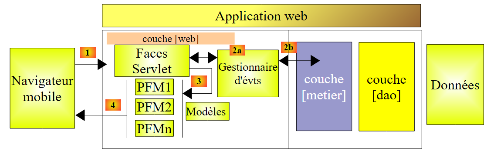
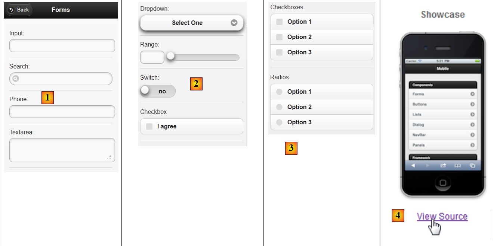
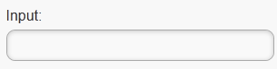
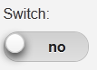
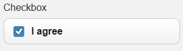
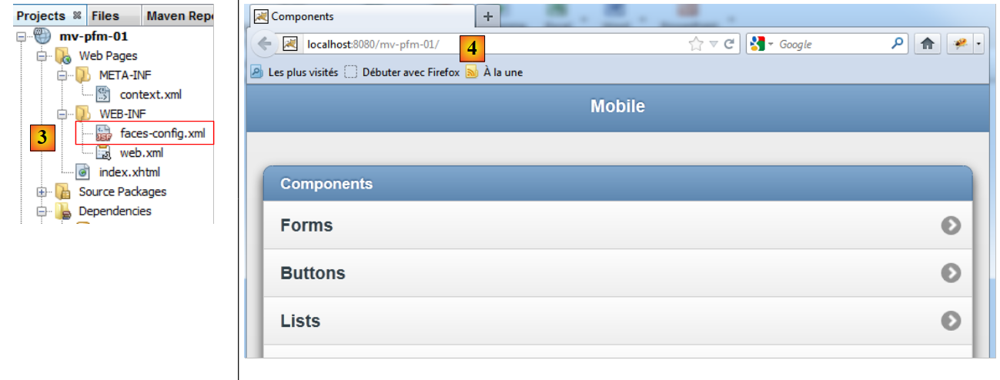
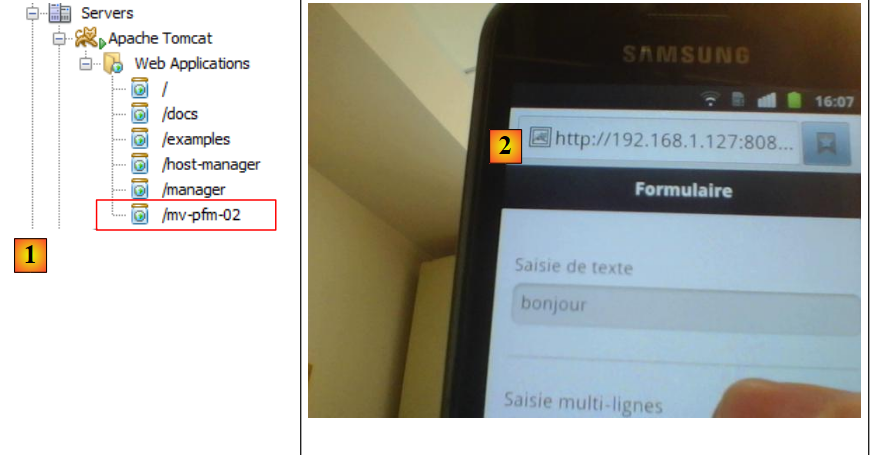

8. مقدمة إلى Primefaces mobile
8.1. مكانة Primefaces mobile في تطبيق JSF
لنعد إلى بنية تطبيق Primefaces كما درسناها في بداية هذا المستند:
 |
عندما يكون الهدف هو متصفح الهاتف المحمول، يتعين علينا تغيير العرض. في الواقع، يجب أخذ حجم شاشة الهاتف الذكي في الاعتبار وإعادة تصميم سهولة استخدام الصفحات. توجد مكتبات متخصصة في إنشاء صفحات الويب للأجهزة المحمولة. وهذا هو الحال بالنسبة لمكتبة Primefaces mobile التي تعتمد بدورها على مكتبة JQuery mobile.
ستكون بنية تطبيق الويب للأجهزة المحمولة مماثلة للسابقة، باستثناء أنه بالإضافة إلى JSF و Primefaces، سنستخدم مكتبة Primefaces mobile (PFM).
 |
سنستعرض جميع المفاهيم التي درسناها مع JSF و Primefaces. لن يتغير سوى الطبقة [présentation] (الصفحات بشكل أساسي).
8.2. مزايا Primefaces mobile
موقع Primefaces mobile
[http://www.primefaces.org/showcase-labs/mobile/showcase.jsf?javax.faces.RenderKitId=PRIMEFACES_MOBILE]
يقدم قائمة بالمكونات التي يمكن استخدامها في صفحة PFM [1, 2]:
 |
يمكن استخدام محاكيات الهواتف الذكية لعرض التطبيق التجريبي أعلاه. أحدها متاح لـ iPhone 4 على URL [http://iphone4simulator.com/] [3]. يتم إدخال عنوان التطبيق المراد اختباره في [4] ويتم عرضه بأبعاد iPhone. تعد هذه المحاكيات مفيدة في مرحلة التطوير، ولكن في النهاية، يجب اختبار التطبيق فعليًا على أجهزة محمولة مختلفة.
8.3. تعلم Primefaces mobile
يقدم Primefaces mobile مكونات أقل بكثير من Primefaces. موقع Primefaces mobile
[http://www.primefaces.org/showcase-labs/mobile/showcase.jsf?javax.faces.RenderKitId=PRIMEFACES_MOBILE]
يقدم قائمة بها. فيما يلي على سبيل المثال المكونات التي يمكن استخدامها في نموذج [1]، [2]، [3]:
 |
يمكن تنزيل شفرة المصدر للأمثلة [4]. وبذلك نكتشف أن الصفحة PFM التي تعرض المكونات [1] و [2] و [3] المذكورة أعلاه هي التالية:
<?xml version="1.0" encoding="windows-1250"?>
<f:view xmlns="http://www.w3.org/1999/xhtml"
xmlns:f="http://java.sun.com/jsf/core"
xmlns:h="http://java.sun.com/jsf/html"
xmlns:ui="http://java.sun.com/jsf/facelets"
xmlns:p="http://primefaces.org/ui"
xmlns:pm="http://primefaces.org/mobile"
contentType="text/html">
<pm:page title="Components">
<!-- النماذج -->
<pm:view id="forms">
<pm:header title="Forms">
<f:facet name="left"><p:button value="Back" icon="back" href="#main?reverse=true"/></f:facet>
</pm:header>
<pm:content>
<p:inputText label="Input:" />
<p:inputText label="Search:" type="search"/>
<p:inputText label="Phone:" type="tel"/>
<p:inputTextarea id="inputTextarea" label="Textarea:"/>
<pm:field>
<h:outputLabel for="selectOneMenu" value="Dropdown: "/>
<h:selectOneMenu id="selectOneMenu">
<f:selectItem itemLabel="Select One" itemValue="" />
<f:selectItem itemLabel="Option 1" itemValue="Option 1" />
<f:selectItem itemLabel="Option 2" itemValue="Option 2" />
<f:selectItem itemLabel="Option 3" itemValue="Option 3" />
</h:selectOneMenu>
</pm:field>
<pm:inputRange id="range" minValue="0" maxValue="100" label="Range:" />
<pm:switch id="switch" onLabel="yes" offLabel="no" label="Switch:" />
<p:selectBooleanCheckbox id="booleanCheckbox" value="false" itemLabel="I agree" label="Checkbox"/>
<p:selectManyCheckbox id="checkbox" label="Checkboxes: ">
<f:selectItem itemLabel="Option 1" itemValue="Option 1" />
<f:selectItem itemLabel="Option 2" itemValue="Option 2" />
<f:selectItem itemLabel="Option 3" itemValue="Option 3" />
</p:selectManyCheckbox>
<p:selectOneRadio id="radio" label="Radios: ">
<f:selectItem itemLabel="Option 1" itemValue="Option 1" />
<f:selectItem itemLabel="Option 2" itemValue="Option 2" />
<f:selectItem itemLabel="Option 3" itemValue="Option 3" />
</p:selectOneRadio>
</pm:content>
</pm:view>
</pm:page>
</f:view>
- السطر 7: يظهر مساحة أسماء جديدة، وهي مساحة أسماء مكونات Primefaces mobile التي تبدأ بالبادئة pm،
- السطر 10: يحدد صفحة. ستتألف الصفحة من عدة طرق عرض (السطر 12). لا يمكن رؤية سوى طريقة عرض واحدة في وقت معين. نجد هنا مفهومًا استخدمناه بكثرة في أمثلة Primefaces الخاصة بنا، وهي صفحة واحدة تحتوي على عدة أجزاء يمكن عرضها أو إخفاؤها. هنا، لن نضطر إلى القيام بذلك. سنحدد ببساطة العرض المراد عرضه، بينما يتم إخفاء العروض الأخرى تلقائيًا،
- السطر 12: عرض،
- السطور 13-15: تحدد رأس العرض:
<pm:header title="Forms">
<f:facet name="left"><p:button value="Back" icon="back" href="#main?reverse=true"/></f:facet>
</pm:header>
لاحظ العلامة المستخدمة لإنشاء زر. تسمح السمة href بالتنقل. قيمتها هنا هي اسم عرض. النقر على الزر سيعيد (reverse=true) إلى العرض المسمى main (غير موضح هنا).
- السطر 16: يدرج محتوى العرض،
- السطر 17: ينشئ منطقة إدخال:
<p:inputText label="Input:" />
 |
- السطر 18: منطقة إدخال مع رمز خاص:
<p:inputText label="Search:" type="search"/>
 |
- السطر 19: حقل إدخال لرقم هاتف:
<p:inputText label="Phone:" type="tel"/>
 |
السمة type لعلامة <inputText> لها معنى: فهي تحدد نوع لوحة المفاتيح التي تُعرض على المستخدم لإدخال البيانات. وهكذا، بالنسبة لـ type='tel'، سيتم عرض لوحة مفاتيح رقمية،
- السطر 20: منطقة إدخال متعددة الأسطر وقابلة للتوسيع:
<p:inputTextarea id="inputTextarea" label="Textarea:"/>
 |
- الأسطر 21-29: حقل يجمع عدة مكونات:
<pm:field>
<h:outputLabel for="selectOneMenu" value="Dropdown: "/>
<h:selectOneMenu id="selectOneMenu">
<f:selectItem itemLabel="Select One" itemValue="" />
<f:selectItem itemLabel="Option 1" itemValue="Option 1" />
<f:selectItem itemLabel="Option 2" itemValue="Option 2" />
<f:selectItem itemLabel="Option 3" itemValue="Option 3" />
</h:selectOneMenu>
</pm:field>
 |  |
- السطر 2: العنوان الخاص بمكون السطر 3؛
- السطر 3: قائمة منسدلة؛
- الأسطر 4-7: محتواها،
- السطر 30: شريط تمرير:
<pm:inputRange id="range" minValue="0" maxValue="100" label="Range:" />
 |
- السطر 31: زر ذو قيمتين:
<pm:switch id="switch" onLabel="yes" offLabel="no" label="Switch:" />
 |  |
- السطر 32: مربع اختيار:
<p:selectBooleanCheckbox id="booleanCheckbox" value="false" itemLabel="I agree" label="Checkbox"/>
 |
- الأسطر 33-37: مجموعة من خانات الاختيار:
<p:selectManyCheckbox id="checkbox" label="Checkboxes: ">
<f:selectItem itemLabel="Option 1" itemValue="Option 1" />
<f:selectItem itemLabel="Option 2" itemValue="Option 2" />
<f:selectItem itemLabel="Option 3" itemValue="Option 3" />
</p:selectManyCheckbox>
 |
- الأسطر 38-42: مجموعة من أزرار الاختيار
<p:selectOneRadio id="radio" label="Radios: ">
<f:selectItem itemLabel="Option 1" itemValue="Option 1" />
<f:selectItem itemLabel="Option 2" itemValue="Option 2" />
<f:selectItem itemLabel="Option 3" itemValue="Option 3" />
</p:selectOneRadio>
 |
تجدر الإشارة إلى أن الصفحة تستخدم علامات من المكتبات الثلاث JSF و PF و PFM. لدينا الآن ما يكفي من المعرفة لإنشاء أول مشروع Primefaces mobile.
8.4. مشروع Primefaces mobile الأول: mv-pfm-01
سنستأنف المثال الذي درسناه سابقًا لدمجه في مشروع Maven. وبذلك سنكتشف التبعيات اللازمة لمشروع Primefaces mobile.
8.4.1. مشروع Netbeans
مشروع Netbeans هو التالي:
 |
مشروع Netbeans هو في الأصل مشروع ويب Maven أساسي تمت إضافة التبعيات [2] إليه. وينعكس ذلك في الملف [pom.xml] بالرمز التالي:
<dependency>
<groupId>com.sun.faces</groupId>
<artifactId>jsf-impl</artifactId>
<version>2.1.8</version>
</dependency>
<dependency>
<groupId>org.primefaces</groupId>
<artifactId>primefaces</artifactId>
<version>3.2</version>
</dependency>
<dependency>
<groupId>org.primefaces</groupId>
<artifactId>mobile</artifactId>
<version>0.9.1</version>
<type>jar</type>
</dependency>
</dependencies>
<repositories>
<repository>
<url>http://download.java.net/maven/2/</url>
<id>jsf20</id>
<layout>default</layout>
<name>Repository for library Library[jsf20]</name>
</repository>
<repository>
<url>http://repository.primefaces.org/</url>
<id>primefaces</id>
<layout>default</layout>
<name>Repository for library Library[primefaces]</name>
</repository>
</repositories>
في الأسطر 11-16، التبعية إلى Primefaces mobile. استخدمنا هنا الإصدار 0.9.1 (السطر 14). بالإضافة إلى ذلك، استخدمنا الإصدار 3.2 من Primefaces (السطر 9). أرقام الإصدارات هذه مهمة. في الواقع، واجهت العديد من المشاكل مع PFM، وهي مكتبة غير نهائية. فقد كان هناك لفترة من الوقت إصدار 0.9.2 الذي كان به أخطاء. وقد تم سحبه منذ ذلك الحين. لقد عدنا إلى الإصدار 0.9.1. وبالتالي، تراجع مشروع PFM. كما فشلت الاختبارات مع الإصدار 1.0-SNAPSHOT من الإصدار 1.0 قيد الإنشاء (أوائل يونيو 2012).
الصفحة الرئيسية [index.xhtml] [1] هي صفحة عرض مكونات Primefaces mobile:
<?xml version="1.0" encoding="windows-1250"?>
<f:view xmlns="http://www.w3.org/1999/xhtml"
xmlns:f="http://java.sun.com/jsf/core"
xmlns:h="http://java.sun.com/jsf/html"
xmlns:ui="http://java.sun.com/jsf/facelets"
xmlns:p="http://primefaces.org/ui"
xmlns:pm="http://primefaces.org/mobile"
contentType="text/html">
<pm:page title="Components">
<!-- الصفحة الرئيسية -->
<pm:view id="main">
...
</pm:view>
<!-- النماذج -->
<pm:view id="forms">
...
</pm:view>
<!-- الأزرار -->
<pm:view id="buttons">
...
</pm:view>
...
</pm:page>
</f:view>
هناك صفحة واحدة (السطر 10) تتكون من اثني عشر عرضًا. لن ندخل في تفاصيلها. الهدف هنا هو ببساطة إظهار كيفية إنشاء مشروع Primefaces mobile.
لنقم بتشغيل هذا المشروع. نحصل على صفحة خطأ [1]:
 |
والسبب في ذلك هو أن تطبيق Primefaces mobile يجب أن يتم استدعاؤه باستخدام المعلمة [?javax.faces.RenderKitId=PRIMEFACES_MOBILE] كما في [2]. يمكن الاستغناء عن هذا المعامل عن طريق تعديل الملف [faces-config.xml] (أو إنشاؤه إذا لم يكن موجودًا كما هو الحال هنا) [3]:
 |
محتواه هو التالي:
<?xml version='1.0' encoding='UTF-8'?>
<!-- =========== FULL CONFIGURATION FILE ================================== -->
<faces-config version="2.0"
xmlns="http://java.sun.com/xml/ns/javaee"
xmlns:xsi="http://www.w3.org/2001/XMLSchema-instance"
xsi:schemaLocation="http://java.sun.com/xml/ns/javaee http://java.sun.com/xml/ns/javaee/web-facesconfig_2_0.xsd">
<application>
<default-render-kit-id>PRIMEFACES_MOBILE</default-render-kit-id>
</application>
</faces-config>
- السطر 11: يحدد قيمة المعلمة [javax.faces.RenderKitId].
عند التنفيذ، نحصل على نفس الصفحة السابقة ولكن دون الحاجة إلى تعيين معلمة لـ URL [4]. نترك للقارئ مهمة اختبار هذا التطبيق. ونكتشف فيها بعض الأخطاء: لا يتم عرض العلامة <p:selectManyCheckbox>، وكذلك العلامة <p:selectOneRadio>، ولا تعمل العلامة <pm:range>. هذه الأعطال، التي لا توجد في موقع العرض التوضيحي، تشير إلى أن التطبيق لا يعمل مع التركيبة المستخدمة هنا من Primefaces mobile 0.9.1 مع Primefaces 3.2. لكنه مع ذلك نقطة انطلاق لاكتشاف علامات هذه المكتبة قيد الإنشاء.
للحصول على عرض أكثر واقعية، يمكننا اختبار التطبيق على محاكي مثل محاكي iPhone 4 [http://iphone4simulator.com/]. ونحصل على النتيجة التالية:
 |
ندخل في [5]، وهو نفس URL المستخدم من قبل المتصفح السابق في [4].
8.5. مثال mv-pfm-02: النموذج والقالب
في هذا المشروع، نعرض التفاعلات بين صفحة Primefaces mobile ونموذجها. تتبع هذه التفاعلات قواعد إطار العمل JSF الذي يعتمد عليه Primefaces mobile في النهاية.
8.5.1. طرق العرض
هناك عرضان في المشروع
 |
- تعرض طريقة العرض 1 [1] نموذجًا يمكن التحقق من صحته [2]،
- الطريقة 2 [3] تؤكد الإدخالات وتتيح إمكانية العودة إلى النموذج [4].
يوضح المشروع أمرين:
- العلاقة بين الصفحة ونموذجها،
- التنقل بين طرق عرض الصفحة.
8.5.2. مشروع Netbeans
مشروع Netbeans هو التالي:
 |
- في [1]، صفحة Primefaces mobile،
- إلى [2]، ونموذجها
- في [3]، ملفات الرسائل لأن التطبيق متعدد اللغات،
- في [4]، تبعيات المشروع.
8.5.3. تكوين المشروع
نقدم ملفات التكوين دون شرحها. فقد أصبحت الآن تقليدية.
[web.xml]: تكوين تطبيق الويب:
<?xml version="1.0" encoding="UTF-8"?>
<web-app version="3.0" xmlns="http://java.sun.com/xml/ns/javaee" xmlns:xsi="http://www.w3.org/2001/XMLSchema-instance" xsi:schemaLocation="http://java.sun.com/xml/ns/javaee http://java.sun.com/xml/ns/javaee/web-app_3_0.xsd">
<context-param>
<param-name>javax.faces.PROJECT_STAGE</param-name>
<param-value>Development</param-value>
</context-param>
<servlet>
<servlet-name>Faces Servlet</servlet-name>
<servlet-class>javax.faces.webapp.FacesServlet</servlet-class>
<load-on-startup>1</load-on-startup>
</servlet>
<servlet-mapping>
<servlet-name>Faces Servlet</servlet-name>
<url-pattern>/faces/*</url-pattern>
</servlet-mapping>
<session-config>
<session-timeout>
30
</session-timeout>
</session-config>
<welcome-file-list>
<welcome-file>faces/index.xhtml</welcome-file>
</welcome-file-list>
</web-app>
[faces-config.xml]: تكوين التطبيق JSF:
<?xml version='1.0' encoding='UTF-8'?>
<!-- =========== FULL CONFIGURATION FILE ================================== -->
<faces-config version="2.0"
xmlns="http://java.sun.com/xml/ns/javaee"
xmlns:xsi="http://www.w3.org/2001/XMLSchema-instance"
xsi:schemaLocation="http://java.sun.com/xml/ns/javaee http://java.sun.com/xml/ns/javaee/web-facesconfig_2_0.xsd">
<application>
<resource-bundle>
<base-name>
messages
</base-name>
<var>msg</var>
</resource-bundle>
<message-bundle>messages</message-bundle>
<default-render-kit-id>PRIMEFACES_MOBILE</default-render-kit-id>
</application>
</faces-config>
[messages_fr.properties]: ملف الرسائل باللغة الفرنسية:
forms=Formulaire
input=Saisie de texte
textarea=Saisie multi-lignes
dropdown=Liste d\u00e9roulante
range=Slider
switch=Switch
checkbox=Case \u00e0 cocher
checkboxes=Cases \u00e0 cocher
radios=Boutons radio
valider=Valider
confirmations=Confirmations
back=Retour
8.5.4. صفحة Primefaces mobile
الصفحة [index.xhtml] هي كما يلي:
<?xml version="1.0" encoding='UTF-8'?>
<f:view xmlns="http://www.w3.org/1999/xhtml"
xmlns:f="http://java.sun.com/jsf/core"
xmlns:h="http://java.sun.com/jsf/html"
xmlns:ui="http://java.sun.com/jsf/facelets"
xmlns:p="http://primefaces.org/ui"
xmlns:pm="http://primefaces.org/mobile"
contentType="text/html">
<pm:page title="mv-pfm-02">
<!-- عرض النماذج -->
<pm:view id="forms" swatch="b">
<pm:header title="#{msg['forms']}"/>
<pm:content>
<h:form id="formulaire">
<p:inputText id="inputText" label="#{msg['input']}" value="#{form.inputText}"/>
<p:inputTextarea id="inputTextArea" label="#{msg['textarea']}" value="#{form.inputTextArea}"/>
<pm:field>
<h:outputLabel for="selectOneMenu" value="#{msg['dropdown']}"/>
<h:selectOneMenu id="selectOneMenu" value="#{form.selectOneMenu}">
<f:selectItem itemLabel="Option 1" itemValue="1" />
<f:selectItem itemLabel="Option 2" itemValue="2" />
<f:selectItem itemLabel="Option 3" itemValue="3" />
</h:selectOneMenu>
</pm:field>
<pm:inputRange id="range" minValue="0" maxValue="100" label="#{msg['range']}" value="#{form.range}"/>
<pm:switch id="switch" onLabel="yes" offLabel="no" label="#{msg['switch']}" value="#{form.bswitch}"/>
<p:selectBooleanCheckbox id="booleanCheckbox" itemLabel="I agree" label="#{msg['checkbox']}" value="#{form.booleanCheckbox}"/>
<pm:field>
<h:outputLabel for="manyCheckbox" value="#{msg['checkboxes']}"/>
<h:selectManyCheckbox id="manyCheckbox" value="#{form.manyCheckbox}">
<f:selectItem itemLabel="Option 1" itemValue="1" />
<f:selectItem itemLabel="Option 2" itemValue="2" />
<f:selectItem itemLabel="Option 3" itemValue="3" />
</h:selectManyCheckbox>
</pm:field>
<pm:field>
<h:outputLabel for="radio" value="#{msg['radios']}"/>
<h:selectOneRadio id="radio" value="#{form.radio}">
<f:selectItem itemLabel="Option 1" itemValue="1" />
<f:selectItem itemLabel="Option 2" itemValue="2" />
<f:selectItem itemLabel="Option 3" itemValue="3" />
</h:selectOneRadio>
</pm:field>
<p:commandButton inline="true" value="#{msg['valider']}" update=":infos" action="#{form.valider}"/>
</h:form>
</pm:content>
</pm:view>
<!-- عرض المعلومات -->
<pm:view id="infos" swatch="b">
<pm:header title="#{msg['confirmations']}">
<f:facet name="left"><p:button value="#{msg['back']}" icon="back" href="#forms?reverse=true"/></f:facet>
</pm:header>
<pm:content>
<ul>
<li>#{msg['input']} : ${form.inputText}</li>
<li>#{msg['textarea']} : ${form.inputTextArea}</li>
<li>#{msg['dropdown']} : ${form.selectOneMenu}</li>
<li>#{msg['range']} : ${form.range}</li>
<li>#{msg['switch']} : ${form.bswitch}</li>
<li>#{msg['checkbox']} : ${form.booleanCheckbox}</li>
<li>#{msg['checkboxes']} : ${form.manyCheckboxValue}</li>
<li>#{msg['radios']} : ${form.radio}</li>
</ul>
</pm:content>
</pm:view>
</pm:page>
</f:view>
لقد استخدمنا مثال العرض التوضيحي لموقع Primefaces mobile وقمنا بتعديله ليصبح فعالاً:
- لم يتم عرض العلامة <p:selectManyCheckbox>. قمنا باستبدالها بعلامة <h:selectManyCheckbox> (السطر 32)،
- لم يتم عرض العلامة <p:selectOneRadio>. قمنا باستبدالها بعلامة <p:selectOneRadio> (السطر 40)،
- السطر 27: احتفظنا بعلامة <pm:inputRange> التي تعرض شريط تمرير. هذا الشريط به خلل: لا يمكن تحريك مؤشر شريط التمرير. ولكن يمكن إدخال رقم يجعله يتحرك،
- يُلاحظ أن هناك القليل من العلامات الخاصة بـ PFM (الأسطر 13 و14 و15 و19 و27 و28 في العرض الأول). العلامات الأخرى هي علامات JSF و PF التقليدية. يعتمد Primefaces mobile على هذين الإطارين.
لاحظ بنية الصفحة:
<?xml version="1.0" encoding='UTF-8'?>
<f:view xmlns="http://www.w3.org/1999/xhtml"
xmlns:f="http://java.sun.com/jsf/core"
xmlns:h="http://java.sun.com/jsf/html"
xmlns:ui="http://java.sun.com/jsf/facelets"
xmlns:p="http://primefaces.org/ui"
xmlns:pm="http://primefaces.org/mobile"
contentType="text/html">
<pm:page title="mv-pfm-02">
<!-- عرض النماذج -->
<pm:view id="forms" swatch="b">
<pm:header ...>
<pm:content>
<h:form id="formulaire">
...
<p:commandButton inline="true" value="#{msg['valider']}" update=":infos" action="#{form.valider}"/>
</h:form>
</pm:content>
</pm:view>
<!-- عرض المعلومات -->
<pm:view id="infos" swatch="b">
<pm:header title="#{msg['confirmations']}">
<f:facet name="left"><p:button value="#{msg['back']}" icon="back" href="#forms?reverse=true"/></f:facet>
</pm:header>
<pm:content>
...
</pm:content>
</pm:view>
</pm:page>
</f:view>
- السطر 10: يحدد صفحة PFM. تحدد السمة title العنوان الذي يعرضه المتصفح،
- تتكون الصفحة من عرض واحد أو أكثر. عند عرض الصفحة لأول مرة، يتم عرض العرض الأول. بعد ذلك، ننتقل من عرض إلى آخر عن طريق التنقل. هنا يوجد عرضان: forms في السطر 13 و infos في السطر 24،
- السطر 14: تحدد علامة header رأس العرض،
- السطر 15: العلامة content تحدد محتوى العرض،
- السطر 16: تحتوي طريقة العرض forms على نموذج JSF،
- السطر 18: سيتم التحقق من صحة هذا النموذج بواسطة زر Primefaces كلاسيكي. سيتم إرسال النموذج إلى النموذج [Form] وسيتم معالجته بواسطة الطريقة [Form].valider. ستقوم هذه الطريقة بعملها. سنرى أنها تطلب عرض طريقة العرض infos. قبل ذلك، سيتم تحديث طريقة العرض هذه عن طريق استدعاء AJAX (السمة update)،
- السطر 26: يمكننا الانتقال من عرض المعلومات إلى عرض النماذج باستخدام زر. لاحظ شكل السمة href [href="#forms?reverse=true"]. تشير الترميز #forms إلى عرض النماذج. يطلب المعامل reverse=true الرجوع للخلف. لقد استخدمت هذا السمة من العرض التوضيحي. عند إزالته، لا نلاحظ أي فرق على جهاز المحاكاة... ربما يكون هناك فرق على الهواتف الذكية الحقيقية،
- وأخيرًا، نلاحظ استخدام مكتبة Primefaces mobile في السطر 7.
على الرغم من أنها تقدم ميزات جديدة، فإن هذه الصفحة PFM مفهومة تمامًا. وينطبق الأمر نفسه على نموذجها [Form.java].
8.5.5. القالب [Form.java]
هذا النموذج هو التالي:
package beans;
import java.io.Serializable;
import javax.faces.bean.ManagedBean;
import javax.faces.bean.SessionScoped;
@ManagedBean
@SessionScoped
public class Form implements Serializable {
// القالب
private String inputText = "bonjour";
private String inputTextArea = "ligne1\nligne2";
private String selectOneMenu = "2";
private int range = 4;
private boolean bswitch = true;
private boolean booleanCheckbox = false;
private String[] manyCheckbox = {"1", "3"};
private String radio = "3";
public String valider() {
// ننتقل إلى عرض المعلومات
return "pm:infos";
}
public String getManyCheckboxValue() {
StringBuffer str = new StringBuffer("[");
for (String checkbox : manyCheckbox) {
str.append(checkbox);
}
str.append("]");
return str.toString();
}
// المُستقبلات والمُعيّنات
...
}
لا يوجد هنا أي جديد. كل شيء سبق رؤيته. ومع ذلك، تجدر الإشارة إلى شكل طريقة التحقق التي يستدعيها النموذج. السطر 21: تعيد سلسلة أحرف على شكل 'pm:اسم_الطريقة_المطلوب_عرضها'. هنا، سيتم عرض طريقة عرض المعلومات. لا تقوم الطريقة بأي شيء سوى هذا التنقل. في السابق، تلقت الحقول في الأسطر 12-19 القيم المرسلة. ستُستخدم هذه القيم لتحديث عرض المعلومات (السمة update أدناه):
<p:commandButton inline="true" value="#{msg['valider']}" update=":infos" action="#{form.valider}"/>
ستعرض طريقة عرض المعلومات بعد ذلك القيم المرسلة:
 |
<pm:view id="infos" swatch="b">
<pm:header title="#{msg['confirmations']}">
<f:facet name="left"><p:button value="#{msg['back']}" icon="back" href="#forms"/></f:facet>
</pm:header>
<pm:content>
<ul>
<li>#{msg['input']} : ${form.inputText}</li>
<li>#{msg['textarea']} : ${form.inputTextArea}</li>
<li>#{msg['dropdown']} : ${form.selectOneMenu}</li>
<li>#{msg['range']} : ${form.range}</li>
<li>#{msg['switch']} : ${form.bswitch}</li>
<li>#{msg['checkbox']} : ${form.booleanCheckbox}</li>
<li>#{msg['checkboxes']} : ${form.manyCheckboxValue}</li>
<li>#{msg['radios']} : ${form.radio}</li>
</ul>
</pm:content>
</pm:view>
8.5.6. اختبارات
نقوم بتنفيذ مشروع Netbeans. بمجرد نشر المشروع على Tomcat [1]، يمكننا اختباره على محاكي [http://iphone4simulator.com/] [2]:
 |
سنوضح الآن كيفية اختباره على هاتف ذكي حقيقي . سنقوم بتوصيل الخادم الذي يستضيف التطبيق والهاتف الذكي على نفس الشبكة WIFI:
 |
نقوم بتوصيل الخادم بشبكة الواي فاي. يمكننا بعد ذلك التحقق من عنوانه:
 |
نلاحظ أعلاه عنوان الخادم IP: 192.168.1.127. نقوم بتعطيل أي جدران حماية أو برامج مكافحة فيروسات على الخادم:
 |
على الخادم، يتم تشغيل التطبيق [mv-pfm-02] في Netbeans [1] :
 |
يتم توصيل الهاتف الذكي بنفس شبكة الواي فاي التي يتصل بها الخادم حتى يتعرف الجهازان على بعضهما. ثم نفتح متصفحًا ونطلب العنوان URL [http://192.168.1.127:8080/mv-pfm-02/] [2]. بعد ذلك يمكننا اختبار التطبيق. وسنكتشف بسرور أن شريط التمرير الذي لا يعمل في المحاكي يعمل في الهاتف الذكي. لذلك هناك تباين بين المحاكيات والأجهزة.
8.6. الخلاصة
لم نعرض سوى علامات النماذج من مكتبة Primefaces mobile، ولكن هذا يكفي لتطبيقنا النموذجي.
8.7. الاختبارات باستخدام Eclipse
نقوم باستيراد مشاريع Maven [1] إلى Eclipse ونقوم بتشغيلها [2]،
 |
على خادم Tomcat [3]. ثم يظهر التطبيق الذي تم تشغيله في متصفح Eclipse الداخلي [4].
 |
تجدر الإشارة إلى أن التطبيق [mv-pfm-02] قد أظهر بعض الأعطال في متصفح Eclipse. ولكن عند تحميله في متصفحي Firefox أو IE، اختفت هذه الأعطال.